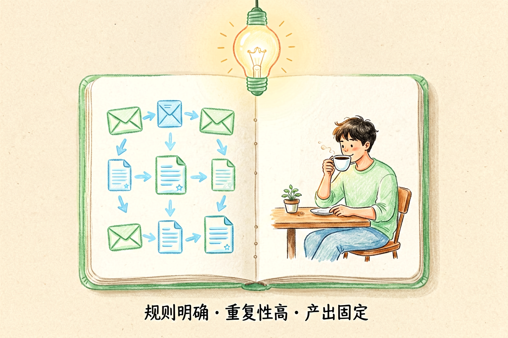

AI办公自动化教程：从零搭建重复工作自动处理工作流
还在手动做同一件事？用AI把重复动作串成自动链，到点自己执行，你只需监督结果。
AI办公自动化是本文的核心主题，下面详细介绍如何使用。
AI办公自动化：理解核心概念

AI办公自动化是指使用AI工具将重复性工作转化为自动流程，节省时间和精力。常见的自动化场景包括邮件自动分类回复、文档批量生成、数据自动整理、报告自动生成等。新手使用AI办公自动化前，先理解它的能力边界。
AI办公自动化不是万能的，它适合规则明确、重复性高的工作。对于需要创造力和判断力的任务，AI仍需要人工介入。理解这一点，才能合理规划和实施自动化方案。
AI办公自动化：识别可自动化场景

AI办公自动化的第一步是识别哪些工作可以自动化。判断标准是：重复性高、规则明确、产出固定。比如每天发送相同格式的邮件、每周生成相同结构的报告、每月整理相同类型的数据，这些都是自动化的好目标。
参考AI邮件自动化，了解邮件处理的自动化方法。结合AI处理Excel教程，掌握数据处理的自动化技巧。识别场景后，制定自动化优先级，先做高频低难度的任务。
AI办公自动化：搭建自动化工作流

AI办公自动化的核心是搭建工作流。工作流由触发条件、处理逻辑、输出结果三部分组成。触发条件可以是时间触发、邮件触发、文件触发等。处理逻辑是AI执行的任务，输出结果是自动化产生的成果。
AI办公自动化工作流示例：
触发条件：每周五下午5点
处理逻辑：读取Excel数据→生成报告→发送邮件
输出结果：自动生成的周报PDF使用工具选择AI生成PPT教程中的方法，可以自动化生成演示文稿。参考AI工作流自动化指南，了解不同工具的工作流设计方法。工作流搭建后，测试运行，确保每一步都按预期执行。
AI办公自动化：测试与优化

AI办公自动化搭建完成后，需要测试和优化。测试时关注三个指标：成功率、耗时、输出质量。成功率指自动化任务正常完成的比例，耗时指完成任务所需时间，输出质量指自动化结果的可接受程度。
根据测试结果调整工作流参数，优化提示词和模板。参考AI处理Excel教程中的验证方法，建立自动化输出的检查机制。持续改进是自动化的关键，不要期望一次成功。
AI办公自动化：注意事项

AI办公自动化过程中，要注意几个风险。不要自动化关键决策，保留人工审核环节。不要自动化敏感数据，确保数据安全。不要过度自动化，保留灵活性应对突发情况。
使用AI办公自动化时，记住它是辅助工具，不是替代你思考。自动化的结果需要人工验证，关键输出必须自己把关。别让AI办公自动化替代你的判断，它只是工具，关键决策仍要自己判断。不要盲目信任自动化流程的每一个输出。
以上是关于AI办公自动化的完整指南。
以上是关于AI办公自动化的完整指南。
以上是关于AI办公自动化的完整指南。 别让AI工具替代你的思考，关键决策仍要自己把关。不要盲目信任AI生成的内容。 !尾图核心要点回顾
{kind=link}
本文信息核对于 2026-09-07。AI 产品的价格、免费额度与功能变动频繁，实际以各工具官网当前说明为准。